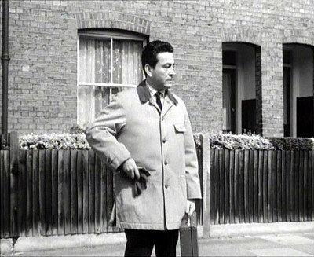
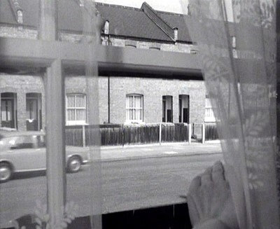
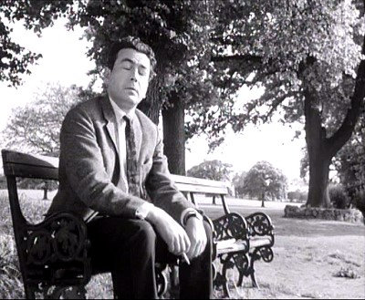
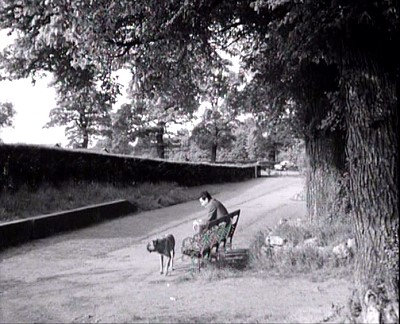
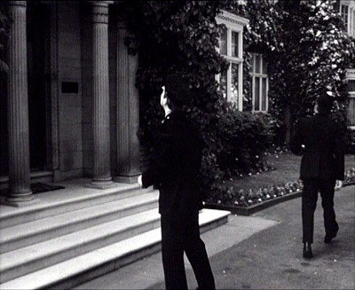
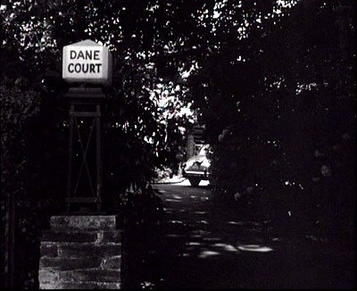
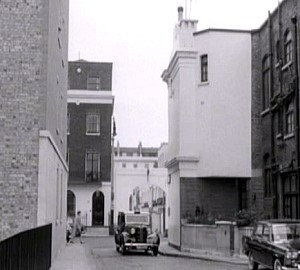

|
|
HELP FIND THE FOLLOWING LOCATIONS
PAGE 49
GIDEON’S WAY: The Perfect Crime (Leslie Norman: May 1965)
Unknown 3 –Todd (Patrick Allen) and Patrick Bedford (Patrick Bedford) arrive back
at Casey’s home after the job.
 
Unknown 5 –Todd (Patrick Allen) meets Casey (Patrick Bedford) in a park to hand over his share of the takings and plan the next robbery.
 
Dane Court, 60 The
Bishops Avenue, N2 –Spender Todd
(Patrick Allen) and Jimmy Casey (Patrick Bedford) arrive at the home of the
Danes and
proceed to break in. A police man is cycling by and takes the
number of Casey’s stolen car. The policemen arrive and are able to arrest Casey
whilst Todd escapes.
(Identified by Alan Field, May 2009)



Boscobel Place, SW1 –Todd (Patrick Allen) arrives back at his mews
apartment. He has been followed by Sandra Casey (Jean Marsh) in
a taxi. She pays off the taxi driver (Richard Davies) and proceeds to confront
Todd. She soon discovers that Todd is not the man’s real name.
(Identified by Greg
Mishevski, aka SainT on the Britmovie Forum, 3rd February 2011)


Unknown 9 –A young couple in Hampstead Heath come across the body of Sandra Casey (Jean Marsh) in the park.

Sloane Square SW1 –The police interview taxi drivers to find the
one that drove Sandra Casey.
(Identified by Alan Field, November 5th 2009)

Westferry Road at the junction with Napier Road and Harbinger Road, E14 –The police eventually find the taxi driver
(Richard Davies)
(Identifed by Geoff Dodd, May 2022)

Ladbroke Road turning
into Ladbroke Mews, W11 –Gideon arrives in a police car – just too late.
(Identified by Greg
Mishevski, aka SainT on the Britmovie Forum, 6th February 2011)

Think you know a spot? Need a bigger image? Email me.
< Previous | Index | Avengerland | Next >
Copyright © 2003 Anthony R. McKay